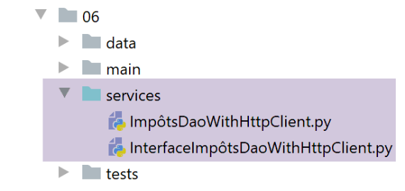

29. 应用练习：第 11 版
29.1. 简介
在客户端/服务器税务计算应用程序的先前版本中，实现该计算业务规则的 [业务逻辑] 层位于服务器端。 现在我们建议将其移至客户端。这样做有什么好处？此前由服务器完成的部分工作将转移到客户端。设想一种场景：N 个客户端向服务器发起查询；这 N 项税务业务计算将由客户端执行。在以前的版本中，这些 N 项业务计算是由服务器完成的。由于不再执行业务计算，服务器将能更快地响应客户端，从而能够同时服务更多的客户端。
客户端/服务器架构如下所示：

- [业务]层[10]已在客户端复制[12]；
- 客户端新增了一个脚本 [main2] [11]；
Web客户端将有两种方式来计算[3]中找到的纳税人列表的税款：
- 使用上一版本的方法。该方法调用服务器的[业务]层[10]。[主]脚本将采用此方法；
- 只需向服务器请求税务机关数据[2-4]，然后使用客户端的[业务]层[12]；
我们将比较这两种方法的性能。
29.2. Web 服务器
Web 服务器的目录结构如下：

- [http-servers/06] 目录最初是通过复制 [http-servers/05] 目录创建的。我们确实会保留前一版本 10 的功能。我们只需向其中添加一项新功能。这通过新增一个控制器 [get_admindata_controller] [1] 来实现。 另一个控制器 [calculate_tax_controller] 其实就是旧版 [index_controller] 更名后的产物；
29.3. 配置
服务器将提供两个服务 URL：
- [/calculate-tax] 用于计算 POST 请求正文中传入的纳税人列表的税款。因此，它对应于旧版 10 中的 [/] URL；
- [/get-admindata] 返回税务管理数据的 JSON 字符串；
配置 [config] 将这些 URL 分别与负责处理它们的控制器关联：
29.4. 主脚本 [main]
主脚本 [main] 对上一版本的 [main] 脚本进行了重构：
1 2 3 4 5 6 7 8 9 10 11 12 13 14 15 16 17 18 19 20 21 22 23 24 25 26 27 28 29 30 31 32 33 34 35 36 37 38 39 40 41 42 43 44 45 46 47 48 49 50 51 52 53 54 55 56 57 58 59 60 61 62 63 64 65 66 67 68 69 70 71 72 73 74 75 76 77 78 79 80 81 82 83 84 85 86 87 88 89 90 91 92 93 94 95 96 97 98 99 100 101 102 103 104 105 106 | |
- 第 88–93 行：[calculate_tax] 函数处理 URL [/calculate-tax]；
- 第 95–100 行：[get_admindata] 函数处理 URL [/get-admindata]；
- 这两个函数本身不执行任何操作。它们会立即将控制权移交给第 37–86 行中的主控制器 [main_controller]；
- 第 37–86 行：主控制器 [main_controller] 实际上就是上一版本中的 [index] 函数，仅有一处细微差别：[index] 函数仅处理单个 URL，而 [main_controller] 则处理两个 URL。因此，它必须将这些 URL 分别交由两个控制器 [calculate_tax_controller, get_admin_data_controller] 之一进行处理；
- 第 39–40 行：我们获取请求的操作 [calculate_tax] 或 [get_admindata]。该信息位于 URL 路径 [request.path] 中。根据具体情况，[request.path] 可能是 [/get-admindata] 或 [/calculate_tax]。第 40 行的拆分操作将返回两个元素：
- / 符号前面的部分为空字符串；
- / 后面的部分为请求操作的名称；
- 第 62-63 行：一旦获取了 URL 操作，我们就知道应使用哪个控制器来处理该 URL。该信息存储在配置 [config] 中；
29.5. 控制器
[calculate_tax_controller] 其实就是上一版本中的 [index_controller]。
[get_admindata_controller] 控制器如下所示：
- URL [/get-admindata] 必须返回税务管理数据的 JSON 字符串；
- 第 6 行：这些数据由主脚本 [main] 检索，并作为 [AdminData] 对象存入字典 [config] 中。我们返回该对象的字典；
29.6. Postman 测试
我们启动 Web 服务器、数据库管理系统（DBMS）和邮件服务器 [hMailServer]。随后，使用 Postman 客户端为若干纳税人计算税款：

在 Postman 控制台中，客户端与服务器的交互如下：
POST /calculate-tax HTTP/1.1
Authorization: Basic YWRtaW46YWRtaW4=
Content-Type: application/json
User-Agent: PostmanRuntime/7.26.2
Accept: */*
Cache-Control: no-cache
Postman-Token: 5e71461a-fec8-4315-85e8-41721de939e5
Host: localhost:5000
Accept-Encoding: gzip, deflate, br
Connection: keep-alive
Content-Length: 824
[
{
"marié": "oui",
"enfants": 2,
"salaire": 55555
},
…
{
"marié": "oui",
"enfants": 3,
"salaire": 200000
}
]
HTTP/1.0 200 OK
Content-Type: application/json; charset=utf-8
Content-Length: 1461
Server: Werkzeug/1.0.1 Python/3.8.1
Date: Wed, 29 Jul 2020 07:02:07 GMT
{"réponse": {"results": [{"marié": "oui", "enfants": 2, "salaire": 55555, "impôt": 2814, "surcôte": 0, "taux": 0.14, "décôte": 0, "réduction": 0}, {"marié": "oui", "enfants": 2, "salaire": 50000, "impôt": 1384, "surcôte": 0, "taux": 0.14, "décôte": 384, "réduction": 347…]}}
现在，让我们使用 GET 请求访问 URL [/get-admindata]：

Postman 控制台中的客户端/服务器对话如下：
GET /get-admindata HTTP/1.1
Authorization: Basic YWRtaW46YWRtaW4=
User-Agent: PostmanRuntime/7.26.2
Accept: */*
Cache-Control: no-cache
Postman-Token: 4af342c4-7ecb-4ab2-9e12-d653f81da424
Host: localhost:5000
Accept-Encoding: gzip, deflate, br
Connection: keep-alive
HTTP/1.0 200 OK
Content-Type: application/json; charset=utf-8
Content-Length: 596
Server: Werkzeug/1.0.1 Python/3.8.1
Date: Wed, 29 Jul 2020 07:07:24 GMT
{"réponse": {"result": {"limites": [9964.0, 27519.0, 73779.0, 156244.0, 93749.0], "coeffr": [0.0, 0.14, 0.3, 0.41, 0.45], "coeffn": [0.0, 1394.96, 5798.0, 13913.7, 20163.4], "plafond_decote_couple": 1970.0, "valeur_reduc_demi_part": 3797.0, "plafond_revenus_celibataire_pour_reduction": 21037.0, "plafond_qf_demi_part": 1551.0, "abattement_dixpourcent_max": 12502.0, "plafond_impot_celibataire_pour_decote": 1595.0, "plafond_decote_celibataire": 1196.0, "plafond_revenus_couple_pour_reduction": 42074.0, "id": 1, "abattement_dixpourcent_min": 437.0, "plafond_impot_couple_pour_decote": 2627.0}}}
29.7. Web 客户端


[http-clients/06] 文件夹最初是通过复制 [http-clients/05] 文件夹创建的。修改工作主要包括：
- 修改 [config_layers] 配置，使其现在包含 [business] 层。此前，它仅包含 [DAO] 层；
- 在 [dao] 层中添加一个新方法；
- 编写脚本 [main2]，该脚本将依赖客户端的 [business] 层来计算纳税人的税款；
29.7.1. 客户端层配置
层配置发生在两个位置：
- 在 [config] 配置中，必须将包含客户端 [business] 层实现的文件夹添加到依赖项中。该文件夹已包含在依赖项中：
absolute_dependencies = [
# dossiers du projet
# BaseEntity, MyException
f"{root_dir}/classes/02/entities",
# InterfaceImpôtsDao, InterfaceImpôtsMétier, InterfaceImpôtsUi
f"{root_dir}/impots/v04/interfaces",
# AbstractImpôtsdao, ImpôtsConsole, ImpôtsMétier
f"{root_dir}/impots/v04/services",
# ImpotsDaoWithAdminDataInDatabase
f"{root_dir}/impots/v05/services",
# AdminData, ImpôtsError, TaxPayer
f"{root_dir}/impots/v04/entities",
# Constantes, tranches
f"{root_dir}/impots/v05/entities",
# ImpôtsDaoWithHttpClient
f"{script_dir}/../services",
# scripts de configuration
script_dir,
# Logger
f"{root_dir}/impots/http-servers/02/utilities",
]
然后必须修改 [config_layers] 文件：
- 第4–6行：实例化[业务]层；
- 第13–16行：将[业务]层返回至层字典中；
29.7.2. [dao]层的实现

[dao]层将实现以下[InterfaceImpôtsDaoWithHttpClient]接口：
- 第 5 行：接口 [InterfaceImpôtsDaoWithHttpClient] 继承自抽象类 [AbstractImpôtsDao]，该类负责管理对客户端文件系统的访问。请注意，它包含一个抽象方法 [get_admindata]；
- 第 7–10 行：我们在上一版本中定义的方法 [calculate_tax_in_bulk_mode] 允许对纳税人列表进行税务计算；
该接口由以下 [ImpôtsDaoWithHttpClient] 类实现：
- 第 13 行：[TaxDaoWithHttpClient] 类实现了 [TaxDaoWithHttpClientInterface] 接口。因此，它继承自 [AbstractTaxDao] 类；
- 第 65–66 行：前一版本中讨论过的 [calculate_tax_in_bulk_mode] 方法；
- 第 29–62 行：[get_admindata] 方法，父类 [AbstractImpôtsDao] 已将其声明为抽象方法。因此，该方法在子类中被实现；
- 第 33–35 行：确定 [get-admindata] 方法必须查询的 Web 服务 URL。这些服务 URL 在客户端的 [config] 配置中定义：
# le serveur de calcul de l'impôt
"server": {
"urlServer": "http://127.0.0.1:5000",
"authBasic": True,
"user": {
"login": "admin",
"password": "admin"
},
"url_services": {
"calculate-tax": "/calculate-tax",
"get-admindata": "/get-admindata"
}
},
- （续）
- 第 9–12 行：两个 Web 服务器 URL；
- 第 37–44 行：同步查询服务 URL；
- 第 46–42 行：如果配置要求，则记录服务器的响应；
- 第 57 行：我们知道服务器发送了一个字典格式的 JSON 字符串；
- 第 58–60 行：如果响应的 HTTP 状态码不是 200，则抛出异常；
- 第 61–62 行：返回封装服务器发送的税务管理数据的 [AdminData] 对象；
29.8. [main, main2] 脚本
[main]脚本是上一版本中的脚本。它使用来自[dao]层的[calculate_tax_in_bulk_mode]方法，因此调用了服务器的[business]层；
[main2]脚本与[main]脚本功能相同，但使用客户端的[business]层：
- 第 26-27 行：从税务机关的服务器获取数据；
- 第28-31行：随后在本地计算纳税人的税款；
29.9. 客户端测试
在每个脚本 [main, main2] 中，我们都会记录脚本的开始和结束时间。这样我们就能计算出脚本的执行时间。让我们来做一些预测：
- 上一版本的 [main] 脚本：
- 创建 N 个同时运行的线程；
- 每个线程处理一批纳税人，并通过向服务器发送单次请求为其计算税款；
- 由于 N 个线程同时运行，N+1 个请求会在 N 个请求收到响应之前就被发送出去。因此，N 个请求的处理成本高于单个请求，但可能高不了多少。服务器上还有 11 项（纳税人数）业务计算；
- 此版本中的 [main2] 脚本：
- 仅向服务器发送一次请求；
- 在客户端本地执行 11 项业务计算；
无论在服务器端还是客户端执行，业务计算所需的时间都是一样的。因此，差异主要体现在请求上。因此，我们可以预期 [main] 的执行时间会比 [main2] 稍长一些。
我们启动版本 11 的服务器、DBMS 以及 [hMailServer] 邮件服务器。在服务器端，我们将 [sleep_time] 参数设置为零，以确保两项测试在相同条件下执行。
执行 1 [main]
执行 [main] 生成以下日志：
2020-07-29 14:35:50.016079, MainThread : début du calcul de l'impôt des contribuables
2020-07-29 14:35:50.016079, Thread-1 : début du calcul de l'impôt des 1 contribuables
2020-07-29 14:35:50.016079, Thread-2 : début du calcul de l'impôt des 4 contribuables
2020-07-29 14:35:50.016079, Thread-3 : début du calcul de l'impôt des 2 contribuables
2020-07-29 14:35:50.016079, Thread-4 : début du calcul de l'impôt des 2 contribuables
2020-07-29 14:35:50.024426, Thread-5 : début du calcul de l'impôt des 2 contribuables
2020-07-29 14:35:50.050473, Thread-1 : {"réponse": {"results": [{"marié": "oui", "enfants": 2, "salaire": 55555, "impôt": 2814, "surcôte": 0, "taux": 0.14, "décôte": 0, "réduction": 0}]}}
2020-07-29 14:35:50.050473, Thread-1 : fin du calcul de l'impôt des 1 contribuables
2020-07-29 14:35:50.050473, Thread-3 : {"réponse": {"results": [{"marié": "oui", "enfants": 3, "salaire": 100000, "impôt": 9200, "surcôte": 2180, "taux": 0.3, "décôte": 0, "réduction": 0}, {"marié": "oui", "enfants": 5, "salaire": 100000, "impôt": 4230, "surcôte": 0, "taux": 0.14, "décôte": 0, "réduction": 0}]}}
2020-07-29 14:35:50.051214, Thread-3 : fin du calcul de l'impôt des 2 contribuables
2020-07-29 14:35:50.051214, Thread-5 : {"réponse": {"results": [{"marié": "non", "enfants": 0, "salaire": 200000, "impôt": 64210, "surcôte": 7498, "taux": 0.45, "décôte": 0, "réduction": 0}, {"marié": "oui", "enfants": 3, "salaire": 200000, "impôt": 42842, "surcôte": 17283, "taux": 0.41, "décôte": 0, "réduction": 0}]}}
2020-07-29 14:35:50.051214, Thread-5 : fin du calcul de l'impôt des 2 contribuables
2020-07-29 14:35:50.051214, Thread-2 : {"réponse": {"results": [{"marié": "oui", "enfants": 2, "salaire": 50000, "impôt": 1384, "surcôte": 0, "taux": 0.14, "décôte": 384, "réduction": 347}, {"marié": "oui", "enfants": 3, "salaire": 50000, "impôt": 0, "surcôte": 0, "taux": 0.14, "décôte": 720, "réduction": 0}, {"marié": "non", "enfants": 2, "salaire": 100000, "impôt": 19884, "surcôte": 4480, "taux": 0.41, "décôte": 0, "réduction": 0}, {"marié": "non", "enfants": 3, "salaire": 100000, "impôt": 16782, "surcôte": 7176, "taux": 0.41, "décôte": 0, "réduction": 0}]}}
2020-07-29 14:35:50.051214, Thread-2 : fin du calcul de l'impôt des 4 contribuables
2020-07-29 14:35:50.051214, Thread-4 : {"réponse": {"results": [{"marié": "non", "enfants": 0, "salaire": 100000, "impôt": 22986, "surcôte": 0, "taux": 0.41, "décôte": 0, "réduction": 0}, {"marié": "oui", "enfants": 2, "salaire": 30000, "impôt": 0, "surcôte": 0, "taux": 0.0, "décôte": 0, "réduction": 0}]}}
2020-07-29 14:35:50.051214, Thread-4 : fin du calcul de l'impôt des 2 contribuables
2020-07-29 14:35:50.051214, MainThread : fin du calcul de l'impôt des contribuables
执行时间为 [051214-016079] 纳秒（第 17 行 – 第 1 行），即 35 毫秒和 135 纳秒。
我们可以看到，从向服务器发出第一个请求到客户端收到最后一个响应，所用时间相同，均为 [051214-016079]（第 15 行 – 第 1 行），即 35 毫秒和 135 纳秒。
执行 2 [main2]
[main2] 的执行产生了以下日志：
2020-07-29 14:41:03.303520, MainThread : début du calcul de l'impôt des contribuables
2020-07-29 14:41:03.345084, MainThread : {"réponse": {"result": {"limites": [9964.0, 27519.0, 73779.0, 156244.0, 13500.0], "coeffr": [0.0, 0.14, 0.3, 0.41, 0.45], "coeffn": [0.0, 1394.96, 5798.0, 13913.7, 20163.4], "plafond_decote_couple": 1970.0, "valeur_reduc_demi_part": 3797.0, "plafond_revenus_celibataire_pour_reduction": 21037.0, "plafond_qf_demi_part": 1551.0, "abattement_dixpourcent_max": 12502.0, "plafond_impot_celibataire_pour_decote": 1595.0, "plafond_decote_celibataire": 1196.0, "plafond_revenus_couple_pour_reduction": 42074.0, "id": 1, "abattement_dixpourcent_min": 437.0, "plafond_impot_couple_pour_decote": 2627.0}}}
2020-07-29 14:41:03.349975, MainThread : fin du calcul de l'impôt des contribuables
执行时间为 [349975-303520] 纳秒（第 3 行 - 第 1 行），即 46 毫秒又 455 纳秒。出乎意料的是，[main] 比 [main2] 更快。
我们看到，来自 [main2] 的单次请求耗时 [345084-303520]（第 2 行 – 第 1 行），即 41 毫秒和 564 纳秒。 随后，税费计算耗时 [349975-345084]（第 3 行减去第 2 行），即 4 毫秒和 91 纳秒。执行时间主要由 HTTP 请求所占。 令人惊讶的是，我们看到来自 [main2] 的单次请求耗时 [41 毫秒]，反而比来自 [main] 的四个并发请求 [35 毫秒] 更长。
在服务器端，日志如下：
2020-07-29 14:35:27.047721, MainThread : [serveur] démarrage du serveur
2020-07-29 14:35:27.140927, MainThread : [serveur] connexion à la base de données réussie
2020-07-29 14:35:28.790716, MainThread : [serveur] démarrage du serveur
2020-07-29 14:35:28.847518, MainThread : [serveur] connexion à la base de données réussie
2020-07-29 14:35:50.039178, Thread-2 : [index] requête : <Request 'http://127.0.0.1:5000/calculate-tax' [POST]>
2020-07-29 14:35:50.039178, Thread-3 : [index] requête : <Request 'http://127.0.0.1:5000/calculate-tax' [POST]>
2020-07-29 14:35:50.043220, Thread-4 : [index] requête : <Request 'http://127.0.0.1:5000/calculate-tax' [POST]>
2020-07-29 14:35:50.044307, Thread-5 : [index] requête : <Request 'http://127.0.0.1:5000/calculate-tax' [POST]>
2020-07-29 14:35:50.045796, Thread-2 : [index] {'réponse': {'results': [{'marié': 'oui', 'enfants': 3, 'salaire': 100000, 'impôt': 9200, 'surcôte': 2180, 'taux': 0.3, 'décôte': 0, 'réduction': 0}, {'marié': 'oui', 'enfants': 5, 'salaire': 100000, 'impôt': 4230, 'surcôte': 0, 'taux': 0.14, 'décôte': 0, 'réduction': 0}]}}
2020-07-29 14:35:50.045796, Thread-3 : [index] {'réponse': {'results': [{'marié': 'oui', 'enfants': 2, 'salaire': 55555, 'impôt': 2814, 'surcôte': 0, 'taux': 0.14, 'décôte': 0, 'réduction': 0}]}}
2020-07-29 14:35:50.046825, Thread-6 : [index] requête : <Request 'http://127.0.0.1:5000/calculate-tax' [POST]>
2020-07-29 14:35:50.046825, Thread-6 : [index] {'réponse': {'results': [{'marié': 'oui', 'enfants': 2, 'salaire': 50000, 'impôt': 1384, 'surcôte': 0, 'taux': 0.14, 'décôte': 384, 'réduction': 347}, {'marié': 'oui', 'enfants': 3, 'salaire': 50000, 'impôt': 0, 'surcôte': 0, 'taux': 0.14, 'décôte': 720, 'réduction': 0}, {'marié': 'non', 'enfants': 2, 'salaire': 100000, 'impôt': 19884, 'surcôte': 4480, 'taux': 0.41, 'décôte': 0, 'réduction': 0}, {'marié': 'non', 'enfants': 3, 'salaire': 100000, 'impôt': 16782, 'surcôte': 7176, 'taux': 0.41, 'décôte': 0, 'réduction': 0}]}}
2020-07-29 14:35:50.046825, Thread-4 : [index] {'réponse': {'results': [{'marié': 'non', 'enfants': 0, 'salaire': 200000, 'impôt': 64210, 'surcôte': 7498, 'taux': 0.45, 'décôte': 0, 'réduction': 0}, {'marié': 'oui', 'enfants': 3, 'salaire': 200000, 'impôt': 42842, 'surcôte': 17283, 'taux': 0.41, 'décôte': 0, 'réduction': 0}]}}
2020-07-29 14:35:50.046825, Thread-5 : [index] {'réponse': {'results': [{'marié': 'non', 'enfants': 0, 'salaire': 100000, 'impôt': 22986, 'surcôte': 0, 'taux': 0.41, 'décôte': 0, 'réduction': 0}, {'marié': 'oui', 'enfants': 2, 'salaire': 30000, 'impôt': 0, 'surcôte': 0, 'taux': 0.0, 'décôte': 0, 'réduction': 0}]}}
2020-07-29 14:41:03.341582, Thread-7 : [index] requête : <Request 'http://127.0.0.1:5000/get-admindata' [GET]>
2020-07-29 14:41:03.341582, Thread-7 : [index] {'réponse': {'result': {'limites': [9964.0, 27519.0, 73779.0, 156244.0, 13500.0], 'coeffr': [0.0, 0.14, 0.3, 0.41, 0.45], 'coeffn': [0.0, 1394.96, 5798.0, 13913.7, 20163.4], 'plafond_decote_couple': 1970.0, 'valeur_reduc_demi_part': 3797.0, 'plafond_revenus_celibataire_pour_reduction': 21037.0, 'plafond_qf_demi_part': 1551.0, 'abattement_dixpourcent_max': 12502.0, 'plafond_impot_celibataire_pour_decote': 1595.0, 'plafond_decote_celibataire': 1196.0, 'plafond_revenus_couple_pour_reduction': 42074.0, 'id': 1, 'abattement_dixpourcent_min': 437.0, 'plafond_impot_couple_pour_decote': 2627.0}}}
- 第5行：来自客户端[main]的第一个请求；
- 第14行：对客户端[main]的最后一次响应。两者之间间隔6毫秒和647纳秒；
- 第15–16行：来自客户端 [main2] 的单次请求。响应是即时的；